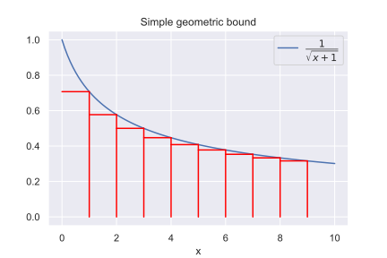

Projected subgradient descent
1 Intuition
1.1 Recap
Suppose, we are to solve the following problem:
\tag{P} \min_{x \in S} f(x),
When S = \mathbb{R}^n, we have the unconstrained problem, which sometimes could be solved with (sub)gradient descent algorithm:
\tag{SD} x_{k+1} = x_k - \alpha_k g_k,
For this method we have the following bounds:
2 Bounds derivation
2.1 Introduction
В этом разделе мы будем рассматривать работу в рамках какого-то выпуклого множества S \in \mathbb{R}^n, так, чтобы x_k \in S. Запишем для начала соотношение для итераций:
\begin{align*} \|x_{k+1} - x^*\|^2 &= \|(x_{k+1} - x_k) + (x_k - x^*)\|^2 = \\ &= \|x_k - x_{k+1}\|^2 + \|x_k - x^*\|^2 - 2 \langle x_k - x_{k+1} ,x_k - x^*\rangle \\ 2 \langle x_k - x_{k+1} ,x_k - x^*\rangle &= \|x_k - x^*\|^2 - \|x_{k+1} - x^*\|^2 + \|x_k - x_{k+1}\|^2 \end{align*}
Заметим, что при работе на ограниченном множестве у нас появилась небольшая проблема: x_{k+1} может не лежать в бюджетном множестве. Сейчас мы увидим, почему это является проблемой для выписывания оценок на число итераций: если мы имеем неравенство, записанное ниже, то процесс получения оценок будет абсолютно совпадать с описанными выше процедурами (потому что в случае субградиентного метода x_k - x_{k+1} = \alpha_k g_k).
\tag{Target} \langle \alpha_k g_k, x_k - x^* \rangle \leq \langle x_k - x_{k+1}, x_k - x^* \rangle
Однако, в нашем случае мы можем лишь получить (будет показано ниже) оценки следующего вида:
\tag{Forward Target} \langle \alpha_k g_k, x_{k+1} - x^* \rangle \leq \langle x_k - x_{k+1}, x_{k+1} - x^* \rangle
Это связано с тем, что x_{k+1} нам легче контролировать при построении условного метода, а значит, легче записать на него оценку. К сожалению, привычной телескопической (сворачивающейся) суммы при таком неравенстве не получится. Однако, если неравенство (Forward Target) выполняется, то из него следует следующее неравенство:
\begin{align*} \tag{Forward Target Fix} \langle \alpha_k g_k, x_k - x^* \rangle &\leq \langle x_k - x_{k+1}, x_k - x^* \rangle - \\ & - \dfrac{1}{2}\|x_k - x_{k+1}\|^2 + \dfrac{1}{2}\alpha_k^2 g_k^2 \end{align*}
Для того, чтобы доказать его, запишем (Forward Target Fix):
\begin{align*} \langle \alpha_k g_k, x_{k} - x^* \rangle + \langle \alpha_k g_k, x_{k+1} - x_k \rangle \leq \\ \langle x_k - x_{k+1}, x_{k} - x^* \rangle + \langle x_k - x_{k+1}, x_{k+1} - x_k \rangle \end{align*}
Переписывая его еще раз, получаем:
\begin{align*} \langle \alpha_k g_k, x_{k} - x^* \rangle &\leq \langle x_k - x_{k+1}, x_{k} - x^* \rangle - \|x_{k} - x_{k+1}\|^2 - \langle \alpha_k g_k, x_{k+1} - x_k \rangle = \\ &= \langle x_k - x_{k+1}, x_{k} - x^* \rangle - \frac{1}{2}\|x_{k} - x_{k+1}\|^2 -\frac{1}{2}\left(\|x_{k} - x_{k+1}\|^2 + 2\langle \alpha_k g_k, x_{k+1} - x_k \rangle\right) \leq \\ &\leq \langle x_k - x_{k+1}, x_{k} - x^* \rangle - \frac{1}{2}\|x_{k} - x_{k+1}\|^2 -\frac{1}{2} \left( - \alpha_k^2 g_k^2\right) = \\ &= \langle x_k - x_{k+1}, x_k - x^* \rangle - \dfrac{1}{2}\|x_k - x_{k+1}\|^2 + \dfrac{1}{2}\alpha_k^2 g_k^2 \end{align*}
Итак, пускай мы имеем неравенство (Forward Target) - напомню, что мы его пока не доказали. Теперь покажем, как с его помощью получить оценки на сходимость метода. Для этого запишем неравенство (Forward Target Fix):
\begin{align*} 2 \langle \alpha_k g_k, x_k &- x^* \rangle + \|x_k - x_{k+1}\|^2 - \alpha_k^2 g_k^2 \leq \\ &\leq 2\langle x_k - x_{k+1}, x_k - x^* \rangle \\ &= \|x_k - x^*\|^2 - \|x_{k+1} - x^*\|^2 + \|x_k - x_{k+1}\|^2 \\ &\quad \\ 2 \langle \alpha_k g_k, x_k - x^* \rangle &\leq \|x_k - x^*\|^2 - \|x_{k+1} - x^*\|^2 + \alpha_k^2 g_k^2 \end{align*}
Если внимательно посмотреть на полученный результат, то это в точности совпадает с исходной точкой доказательства для субградиентного метода в безусловном сеттинге.
Можем сразу получить оценки:
\begin{align*} \sum\limits_{k = 0}^{T-1} \langle g_k, x_k - x^* \rangle &\leq GR \sqrt{T} \\ f(\overline{x}) - f^* &\leq G R \dfrac{1}{ \sqrt{T}} \end{align*}
Таким образом, мы показали, что для метода проекции субградиента справедлива точно такая же оценка на число итераций, если выполняется неравенство (Forward Target) :) Давайте разбираться с ним
Нам следует доказать, что:
\langle \alpha_k g_k, x_{k+1} - x^* \rangle \leq \langle x_k - x_{k+1}, x_{k+1} - x^* \rangle
В более общем случае \forall y \in S:
\begin{align*} \langle \alpha_k g_k, x_{k+1} - y \rangle \leq \langle x_k - x_{k+1}, x_{k+1} - y \rangle & \\ \langle \alpha_k g_k, x_{k+1} - y \rangle - \langle x_k - x_{k+1}, x_{k+1} - y \rangle &\leq 0 \end{align*}
Вспомним из неравенства для проекции (равно как и условия оптимальности первого порядка), что \forall y \in S для некоторой гладкой выпуклой минимизируемой функции g(x) в точке оптимума x \in S:
\langle \nabla g(x), x - y \rangle \leq 0
В противном бы случае, можно было бы сделать градиентный шаг в направлении y -x и уменьшить значение функции.
Рассмотрим теперь следующую функцию g(x):
g(x) = \langle \alpha_k g_k, x \rangle + \dfrac{1}{2} \| x - x_k\|^2, \quad \nabla g(x) = \alpha_k g_k + x - x_k
И давайте теперь строить условный алгоритм как минимизацию этой функции:
x_{k+1} = \text{arg}\min\limits_{x \in S} \left( \langle \alpha_k g_k, x \rangle + \dfrac{1}{2} \| x - x_k\|^2 \right)
Тогда из условия оптимальности:
\begin{align*} \langle \nabla g(x_{k+1}), x_{k+1} - y \rangle &\leq 0 \\ \langle \alpha_k g_k + x_{k+1} - x_k, x_{k+1} - y \rangle &\leq 0 \\ \langle \alpha_k g_k , x_{k+1} - y \rangle + \langle x_{k+1} - x_k, x_{k+1} - y \rangle &\leq 0 \\ \langle \alpha_k g_k, x_{k+1} - y \rangle - \langle x_k - x_{k+1}, x_{k+1} - y \rangle &\leq 0 \end{align*}
Полученное неравенство в точности совпадает с неравенством (Forward Target), которое нам как раз таки и следовало доказать. Таким образом, мы получаем
2.2 Algorithm
x_{k+1} = \text{arg}\min\limits_{x \in S} \left( \langle \alpha_k g_k, x \rangle + \dfrac{1}{2} \| x - x_k\|^2 \right)
Интересные фишки:
- Такая же скорость сходимости, как и для безусловного алгоритма. (Однако, стоимость каждой итерации может быть существенно больше из за необходимости решать задачу оптимизации на каждом шаге)
- В частном случае S = \mathbb{R}^n в точности совпадает с безусловным алгоритмом (убедитесь)
2.2.1 Adaptive stepsize (without T)
Разберем теперь одну из стратегий того, как избежать знания количества шагов T заранее для подбора длины шага \alpha_k. Для этого зададим “диаметр” нашего множества D:
D : \{ \max\limits_{x,y \in S} \|x - y\| \leq D \}
Теперь зададим длину шага на k- ой итерации, как: \alpha_k = \tau \sqrt{\dfrac{1}{k+1}}. Константу \tau \geq 0 подберем чуть позже.
Для начала легко заметить, что:
\begin{align*} \sum\limits_{k=0}^{T-1} \alpha_k &= \tau \sum\limits_{k=0}^{T-1} \dfrac{1}{\sqrt{k+1}} = \tau \left( 1 + \sum\limits_{k=1}^{T-1} \dfrac{1}{\sqrt{k+1}}\right) \leq \\ &\leq \tau \left(1 + \int\limits_{0}^{T-1} \dfrac{1}{\sqrt{x+1}} dx \right) = \tau (2\sqrt{T}-1) \end{align*}
см. геометрический смысл неравенства ниже:

Возьмем теперь равенство для классического субградиентного метода (БМ) (или неравенство в случае метода проекции субгадиента (УМ)):
\begin{align*} 2 \langle \alpha_k g_k ,x_k - x^*\rangle &= \|x_k - x^*\|^2 - \|x_{k+1} - x^*\|^2 + \alpha_k^2 g_k ^2 \\ \sum\limits_{k=0}^{T-1} \langle g_k ,x_k - x^*\rangle &= \sum\limits_{k=0}^{T-1} \left( \dfrac{\|x_k - x^*\|^2}{2 \alpha_k} - \dfrac{\|x_{k+1} - x^*\|^2}{2 \alpha_k} + \dfrac{\alpha_k}{2}g_k^2 \right) \\ &\leq \dfrac{\|x_0 - x^*\|^2}{2 \alpha_0} - \dfrac{\|x_T - x^*\|^2}{2 \alpha_{T-1}} + \\ &+ \dfrac{1}{2}\sum\limits_{k=0}^{T-1} \left( \dfrac{1}{\alpha_{k} }- \dfrac{1}{\alpha_{k-1}} \right) \|x_k - x^*\|^2 + \sum\limits_{k=0}^{T-1} \dfrac{\alpha_k}{2}g_k^2 \leq \\ & \leq D^2 \left( \dfrac{1}{2 \alpha_0} + \dfrac{1}{2}\sum\limits_{k=0}^{T-1} \left( \dfrac{1}{\alpha_{k} }- \dfrac{1}{\alpha_{k-1}} \right) \right) + G^2\sum\limits_{k=0}^{T-1} \dfrac{\alpha_k}{2} \leq \\ & \leq \dfrac{D^2}{2 \alpha_{T-1}} + G^2\sum\limits_{k=0}^{T-1} \dfrac{\alpha_k}{2} \leq \\ &\leq \dfrac{1}{2} \left( \dfrac{D^2}{\tau}\sqrt{T} + \tau G^2 \left(2\sqrt{T} - 1\right)\right) \leq \\ & \leq DG \sqrt{2T} \end{align*}
Где \tau = \dfrac{D}{G\sqrt{2}} - выбран путем минимизации данной оценки по \tau.
Таким образом, мы получили, что в случае, когда количество шагов T неизвестно заранее (весьма важное свойство), оценка ухудшается в \sqrt{2} раз. Такие оценки называют anytime bounds.
2.2.2 Online learning:
PSD - Projected Subgradient Descent
\begin{align*} \tag{anytime PSD} R_{T-1} &= \sum\limits_{k = 0}^{T-1} f_k(x_k) - \min_{x \in S} \sum\limits_{k = 0}^{T-1} f_k(x) \leq DG \sqrt{2T} \\ \tag{PSD} R_{T-1} &= \sum\limits_{k = 0}^{T-1} f_k(x_k) - \min_{x \in S} \sum\limits_{k = 0}^{T-1} f_k(x) \leq DG \sqrt{T} \end{align*}
3 Examples
3.1 Least squares with l_1 regularization
\min_{x \in \mathbb{R^n}} \dfrac{1}{2}\|Ax - b\|_2^2 + \lambda \|x\|_1
3.1.1 Nonnegativity
S = \{x \in \mathbb{R}^n \mid x \geq 0 \}
3.1.2 l_2 - ball
S = \{x \in \mathbb{R}^n \mid \|x - x_c\| \le R \}
x_{k+1} = x_k - \alpha_k \left( A^\top(Ax_k - b) + \lambda \text{sign}(x_k)\right)
3.1.3 Linear equality constraints
S = \{x \in \mathbb{R}^n \mid Ax = b \}
4 Bounds
| Conditions | Convergence rate | Iteration complexity | Type of convergence |
|---|---|---|---|
| Convex Lipschitz-continious function(G) |
\mathcal{O}\left(\dfrac{1}{\sqrt{k}} \right) | \mathcal{O}\left(\dfrac{1}{\varepsilon^2} \right) | Sublinear |
| Strongly convex Lipschitz-continious function(G) |
\mathcal{O}\left(\dfrac{1}{k} \right) | \mathcal{O}\left(\dfrac{1}{\varepsilon} \right) | Sublinear |
5 References
- Comprehensive presentation on projected subgradient method.
- Great cheatsheet by Sebastian Pokutta
- Lecture on subgradient methods @ Berkley